What If Flowers Came From the Moon?
Exploring reflection through time, memory, and place
Introduction
In this research project, I turn towards moments of personal growth through experiences of pause, reflection, and stillness. Over the past few years, I have become more aware of how both I and the people around me change over time. Rather than understanding personal growth as a linear process, I am interested in the small, everyday situations that allow space for observing. As a designer, I approach these moments as situations that can be translated into spatial conditions.
This interest is closely connected to my own experiences. Throughout my teenage years, I often found myself sitting on benches in the same park, either alone or with friends. These moments were not significant because of what was happening around me, but because of the pauses in between, when conversations slowed down or when silence could be held. In these moments, I became aware of my own thoughts in relation to my surroundings, creating a temporary distance from the pace of daily life. Over time, I began to understand these situations as important to my personal development.
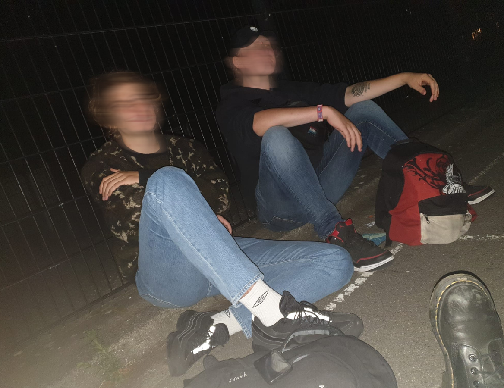
My research project consists of a bench, developed as part of my graduation work. Its design is influenced by the benches I used to spend time on with my friends, translating that personal reference into a new context. The bench will be constructed from wood. A material I have been increasingly drawn to over time, both for its physical qualities and its ability to carry traces of time and use. The bench will be placed in the Graphic Design department of the KABK for the duration of the 2026 Graduation Show. It will be positioned in a semi-central location, overlooking the work of other students, allowing it to function as a place from which the exhibition can be observed.
The bench functions as an open invitation. Visitors can sit, rest, talk, observe, or simply spend time. By sitting down, they shift from moving through the exhibition to remaining within it, occupying a fixed position from which the exhibition unfolds around them.
In this sense, the bench does not simply create a moment of pause, but alters the role of the visitor: from someone in motion to someone who experiences the space through duration. It becomes a situation that structures how time and attention are distributed.
This leads me to the question:
How can a bench be designed and positioned to create conditions for pause, observation, and potential reflection over time?
The following sections will explore this question from different perspectives, beginning with introspection and reflection of my own experiences and conversations that have helped inform the project. This is then followed by a framing of references that position the work within a broader context. The concluding section moves into how these ideas take shape through material and form, while also reflecting on the limitations of this approach.
Framing the Introspection
Introspection
The starting point of my research comes from reflecting on my own development over the past ten years, noticing how my behaviour and way of thinking have changed over time. Rather than understanding that this change is something sudden, I recognise it as something that has accumulated gradually through lived experience.
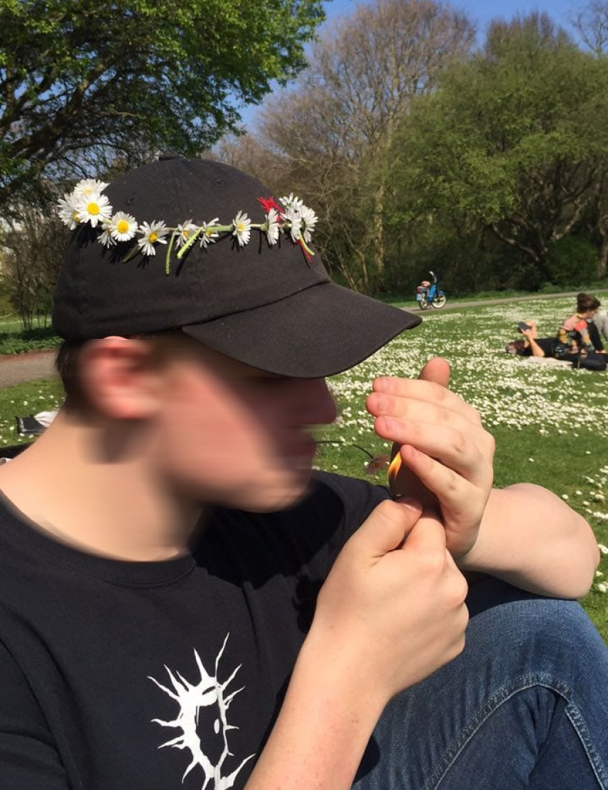
Having been involved with drugs since I was 15 years old, I started to care less about school and my grades, which eventually led to me getting kicked out of high school. From around that time until my early twenties, I might have seemed happy on the outside, but in reality I spent many nights trying not to cry myself to sleep. The combination of puberty, failing school, and drug use took a toll on my mental state, leading to depressive episodes and a more nihilistic view of life.
Now that I am 25, I can look back at that period with more distance. Although it was a difficult time, I can also see how it helped shape me. It was not only an escape, but also something that connected me to others. It brought me out of the isolation of my room into a shared social life. If it were not for that period, I would likely have remained alone in my room, as I often was before.
Looking back, the moments that stayed with me are not the parties or the chaos, but the quieter moments in between. Sitting on a bench at night, either with friends or alone, when conversations slowed down or briefly stopped, created moments where I became aware of my own thoughts in relation to my surroundings. These moments of pause allowed for a kind of reflection that was not forced, but emerged naturally. This is where I begin to understand personal growth as something that builds up through repeated moments like these. This understanding directly informs my approach to the project, where I create situations in which these kinds of pauses can occur. The bench is meant to make space for similar moments to happen for others.
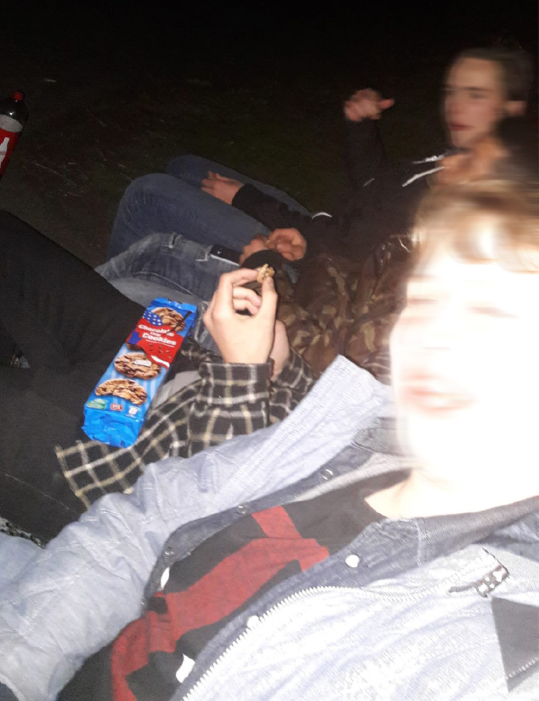
A related approach can be found in the work of American multidisciplinary artist Finnegan Shannon, whose ongoing bench projects treat sitting as an active condition rather than a neutral function. In works such as Do you want us here or not (2018), Shannon places benches in exhibition spaces accompanied by statements that question whether visitors are allowed to sit, making the act of sitting explicit and sometimes uncomfortable. In this way, the work draws attention to how rest is often restricted or controlled (Shannon 2018) within institutional contexts. In their work, benches are used to question expectations around productivity, attention, and accessibility within institutional spaces.
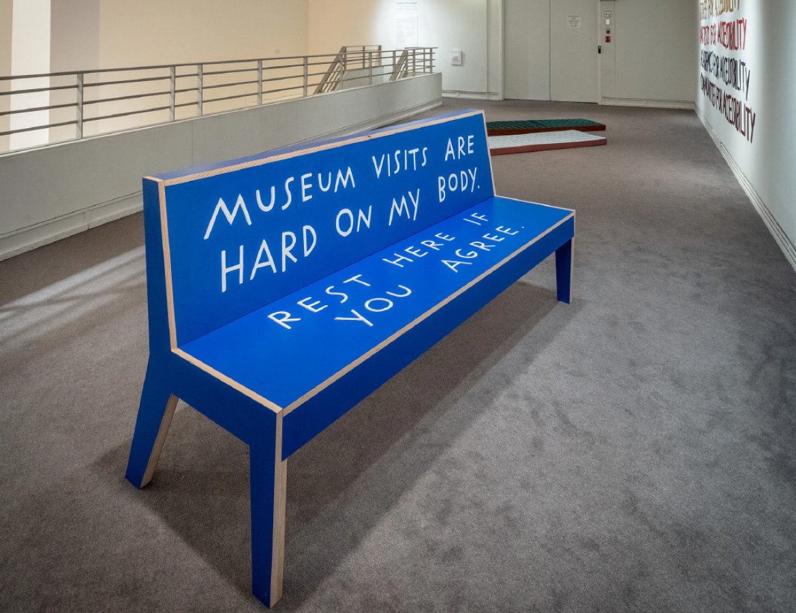
While Shannon's work focuses on collective care and the right to rest, my project approaches the bench from a more personal perspective. Rather than engaging with a broader institutional critique, it emerges from lived experience and memory. However, both approaches share an understanding of the bench as something that can shape behaviour and perception. This comparison helps position my project not simply as a functional object, but as part of a wider approach in which sitting becomes a way to structure time, attention, and experience.
To move beyond my own perspective, I conducted two conversations with a close friend who shared these experiences with me. These were not structured interviews, but open conversation, used to reflect together on how both environment and situation influence these moments.
Conversations
For the first conversation, I asked my friend to take me to a place he finds calming, interesting, or freeing. We initially met at a McDonald's, which he chose despite my request. He explained that although he dislikes the place, he still returns to it occasionally for the temporary satisfaction it offers. Shortly after, we left and walked toward the dunes and the beach.
In contrast to the urban environment where we grew up, he described this landscape as open and freeing. Although we had spent time in similar environments before, this specific area was unfamiliar, which allowed the conversation to unfold without a clear direction. As we walked, the conversation developed more naturally.
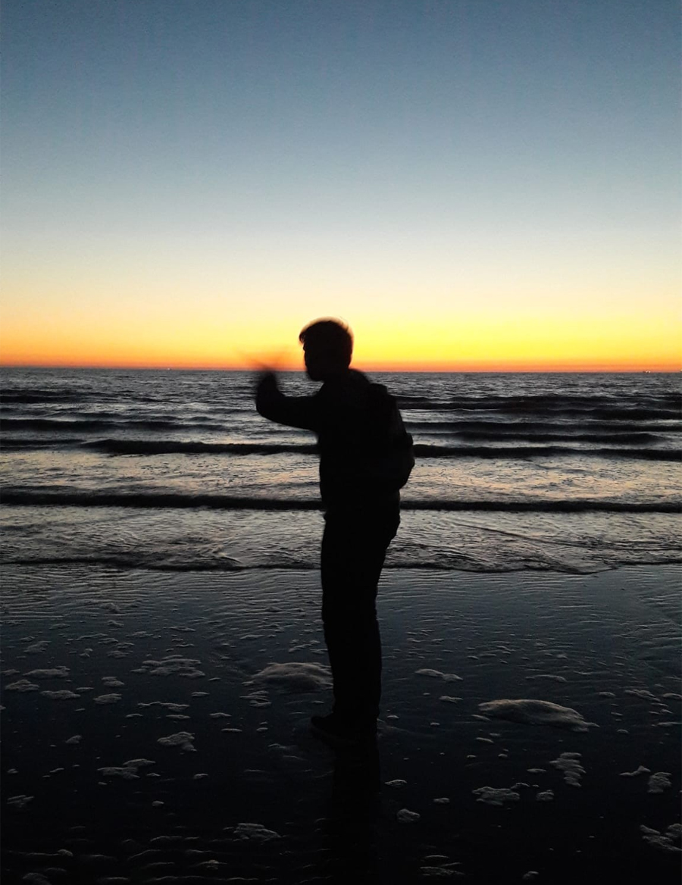
At first, the focus of conversation was mainly reminiscing, revisiting shared memories rather than reflecting on them. Over time this gradually shifted to a more reflective point of view. The openness and relative quiet of the environment seemed to allow for longer pauses in the conversation, which in turn made space for more reflective thoughts to occur.
The second conversation took place in the city centre of The Hague. Here, I noticed that it became more difficult to reach a similar depth. The noise, movement, and constant distractions made it harder to stay with a single thought or topic for an extended period of time. This contrast shows how strongly reflection depends on the conditions in which it takes place, requiring enough physical and mental space for attention to slow down.
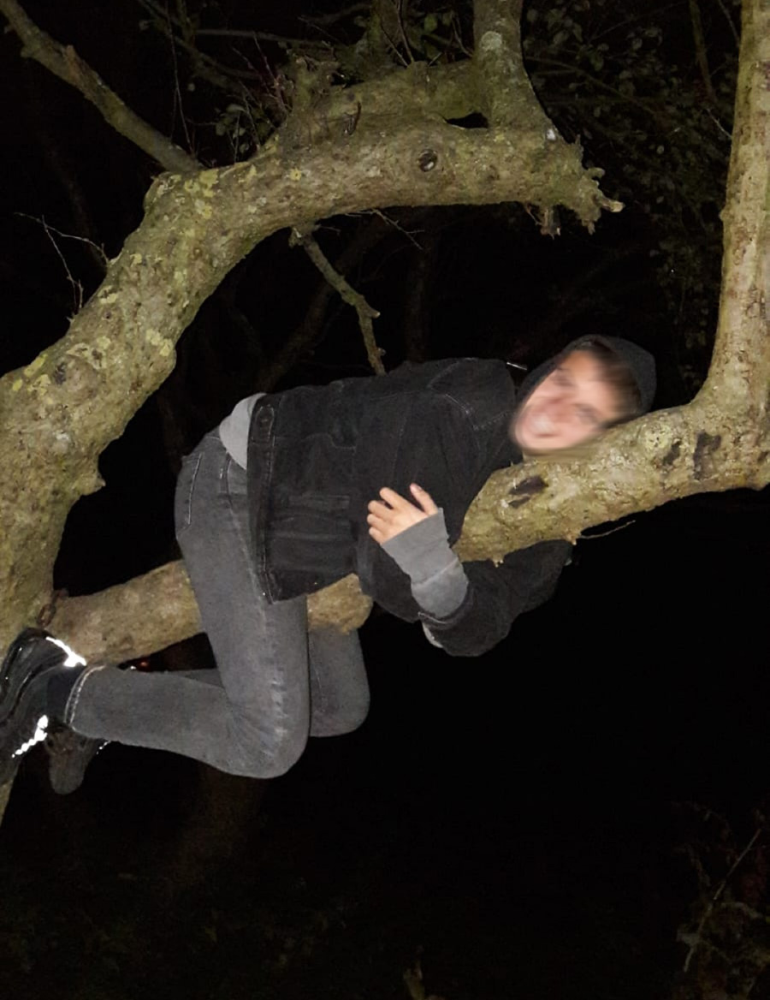
These insights inform the way I think about the bench within the graduation show. Rather than placing it in a quiet or isolated room or corner, I choose to position it within the flow of the exhibition, in a semi-central location overlooking other works. In this way there will be different moments in which at some points it might be more quiet with less people and less distraction, and at other moments it might be busier.
At the same time, I am asking people to sit. Sitting interrupts the expected flow of the exhibition, shifting the visitor from a body in motion to a point of observation within the space. This shift connects to the work of Finnegan Shannon, where sitting is not being treated as neutral, but as something that influences how people occupy or move through space. In the context of the conversations, this becomes visible in a different way. In the dunes, sitting or slowing down happened almost naturally, while in the city it felt less accessible, as if the environment did not easily allow for it.
Within the graduation show, the bench introduces a similar question: not only what people do when they sit, but whether they allow themselves to sit at all. In doing so, it also makes the movement of other visitors more visible, as those who remain become aware of those who continue to pass by. In that sense, the bench shifts what feels possible within the space. The bench does not attempt to recreate the calmness of the dunes, but rather it functions as a subtle interruption, an opportunity to step out of the pace of the exhibition, even if only briefly. Like in the conversations, reflection cannot be imposed, but depends on how conditions are structured through placement and use.
Framing the References
In order to position this project within a broader context, I turn to a number of references that engage with time, experience, and the conditions that shape personal change. These references are not used to explain the project directly, but to sharpen how I understand what I am making. Instead of treating time as something neutral, they approach it as something that can be structured, experienced, or disrupted. Through these different perspectives my project can be read as part of a wider conversation on duration, attention, and lived experience.
Tehching Hsieh – Time, Duration, and Constraint
Taiwanese painter and performer Tehching Hsieh is known for his year-long performances in which he imposed strict rules on his daily life, using time as his primary material. In works such as One Year Performance 1981-1982, he lived entirely outdoors for a year (Hsieh 1981), enduring all weather conditions without entering a building. In Art/Life One Year Performance 1983-1984, he and American performance artist Linda Montano tied themselves together with a rope for a year, remaining in constant proximity without physical contact (Hsieh 1983).
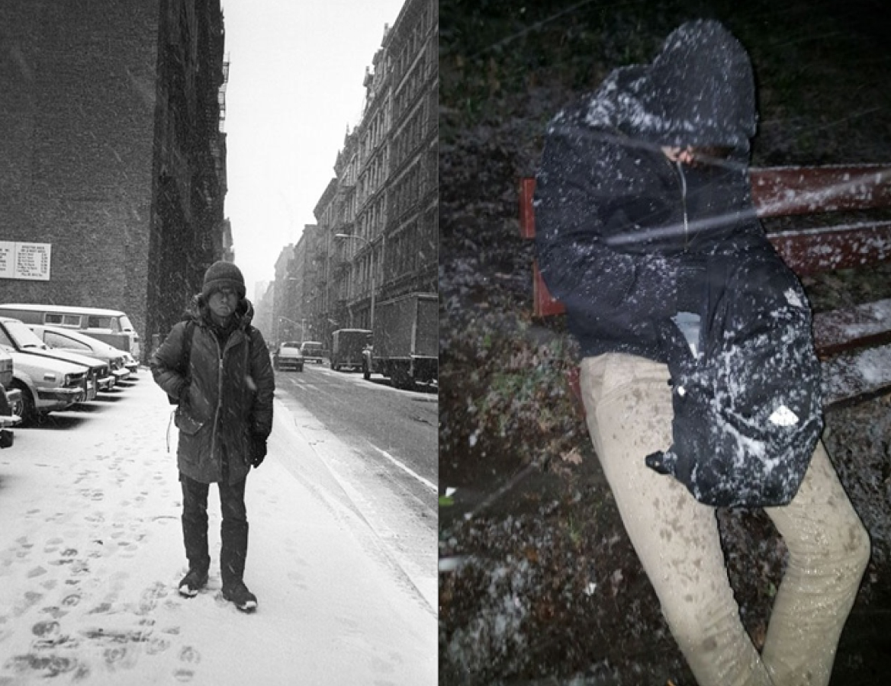
In both cases, the work is not defined by singular events, but by repetition, duration, and endurance. When looking at the documentation, transformation appears gradual rather than immediate, showing that change only becomes visible in retrospect. This understanding of time shifts the focus of my project away from immediate effect. The bench is therefore not meant to create reflection instantly, but to allow something to build over time through use.
Unlike Hsieh's work, the bench does not impose strict conditions on its intended use, as it remains open and accessible. However, it shares a similar interest in duration: what happens when someone stays, sits, or returns. In this sense, the bench can be understood as a much lighter structure that still holds time, without controlling how that time is used.
Hartmut Rosa – Acceleration and Resonance
German sociologist Hartmut Rosa describes how modern life is shaped by a constant pressure to accelerate (Rosa 2013). In Social Acceleration, he explains how technological, social, and economic systems push us to do more in less time, often creating a sense of disconnection rather than progress. Rosa does not argue for slowness, instead he shows that slowing down is often used in order to help keep up with this accelerated pace. What in turn becomes problematic is not speed itself, but the feeling of alienation that can come with it.
As an alternative, he introduces the concept of "resonance", which describes moments in which individuals feel a meaningful connection to their surroundings. These are moments in which time can be experienced as something that can be inhabited. This relates directly to my project. The graduation show can be a fast-moving environment, where visitors move from one work to the next. The bench does not try to oppose this movement entirely, but introduces a small interruption within it.
By offering a place to sit, the bench shifts the visitor from continuous movement to temporary stillness, allowing the exhibition to be experienced through duration. It allows visitors to remain in one place for longer, even briefly. At that moment, attention can change from quickly scanning works to observing more slowly, or from moving through the space to becoming aware of it. Rather than producing "resonance" as a fixed outcome, the bench creates a situation in which it might occur.
From Reflection to Form
material
The bench is constructed from wood. Over the past two years, I have developed a growing interest in working with this material, both for its physical qualities and for the way it relates to time. Wood is a material that develops slowly, as its growth cannot be rushed. It carries traces of that process in its grain that only become visible once it is cut. In that sense, it parallels the kind of change I have been exploring throughout this project: gradual, layered, and often only visible in hindsight.
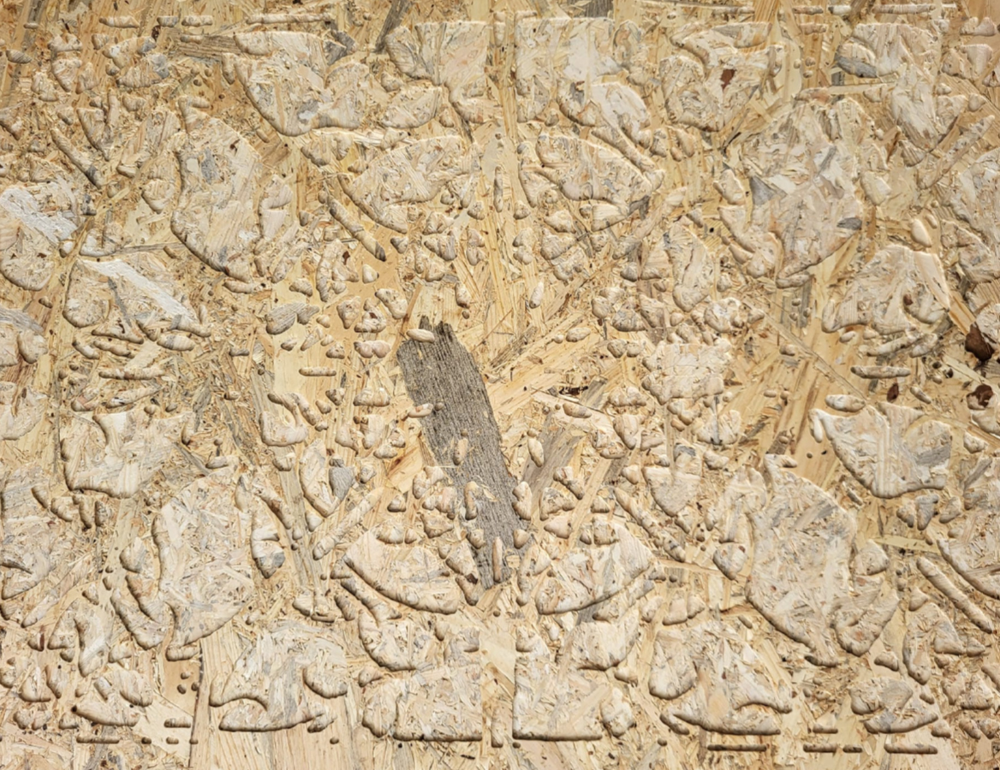
This connection informs how I understand the bench as something that exists over time. Rather than it being a fixed object, it is something that may change throughout its lifespan by use, exposure, and repetition.
In the park near my parents' house, where my friends and I used to spend a lot of time, there were two metal benches with a trashcan in between beneath a tree. From one of the branches hung a heavy chain lock. Over the years, the spot where it rested became worn and smoother than the rest of the tree. This detail showed how repeated presence can leave traces, even when no single moment stands out.
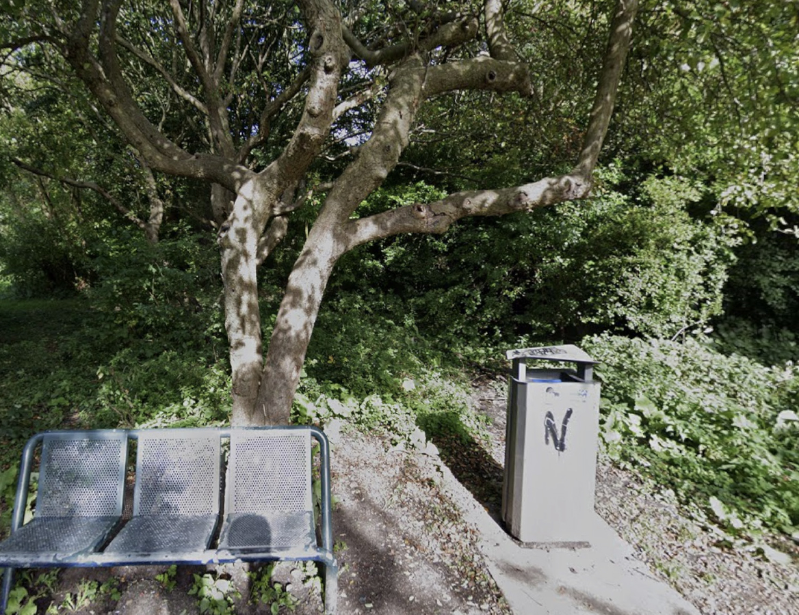
This observation influences how I approach the bench, as it is not only something to sit on, but something that may gradually register time through interaction.
Form and use over time
The bench will be finished and placed in the exhibition as a complete object. From that point onward, it will not be repaired or restored. The marks, scratches, and signs of use left behind will be allowed to remain. This decision is connected to the idea that change accumulates over time. Just as the worn tree branch became shaped through repeated contact, the bench may slowly gather its own history through use.
At the same time, the bench does not prescribe how its visitors should utilize it. Its form remains open: it can be sat on, leaned against, or used briefly in passing. This openness is intentional, as it aligns with the idea that reflection is not something that can be directed, only supported. Within the context of the graduation show, this means that the bench operates in two ways. In the short term, it creates moments of pause within the flow of the exhibition. Over a longer period of time, beyond the exhibition, it continues to exist as an object that can carry traces of interaction and presence.
In this sense, the bench shifts from being a static object to something that holds both time and use. It does not represent personal growth directly, but creates a structure in which it may continue to unfold.
Looking Back
This research project began with the question of how a bench can be designed and positioned in order to create conditions for pause, observation, and potential reflection. Throughout the process it became clear that this question is not something that can be answered in a fixed or definitive way. Instead, it unfolded through a combination of personal reflection, conversation, and making.
What became apparent is that reflection cannot be produced through design, but depends on situations where attention can slow down. This understanding shifted the focus of the project from designing an outcome more towards shaping conditions.
Through introspection, I came to understand how these moments of pause have played a role in my own development. Seeing how they are part of a longer process. The conversations expanded on this understanding, showing how strongly environments are able to influence whether such moments can occur. Together, they made clear that reflection is relational: it depends on context, situation, and the willingness to engage.
The references helped to position this within a broader perspective. They reinforced the idea that time is something that can be structured and experienced in different ways. In relation to this, the bench can be understood as a structure that holds time. It does not prescribe how that time should be used, but allows it to unfold through presence.
In its material form, this approach becomes tangible. The choice of wood, the decision to allow wear and traces of interaction to remain, and the lack of maintenance over time all contribute to how the bench will continue to change. In this sense, the project does not end with the graduation show, but continues beyond it. The bench will carry marks of use, gradually building its own history through interaction and exposure.
At the same time, there are clear limitations to this approach. The project cannot determine how people will engage with it. It may be used as intended, but it may also be ignored, misused, or simply passed by. Reflection is difficult to measure and verify, and its presence remains uncertain. This uncertainty is not a failure of the project, but a condition of working with something that is inherently open.
Instead of providing answers, the project operates as a proposal. It suggests that even within environments defined by movement and attention, a visitor can shift from moving through the exhibition to remaining within it, changing how the surrounding works are perceived over time. A simple act, such as sitting down, can alter how time is experienced and perceived, even if only briefly.
Looking back, the bench is not only a response to this question, but also a continuation of it. It remains open to change, shaped by those who encounter it over time. In that sense, it also reflects a shift in how I understand my own role as a designer to not always define outcomes, but to create situations in which something is allowed to happen, much like the moments that first led me to sit and observe.
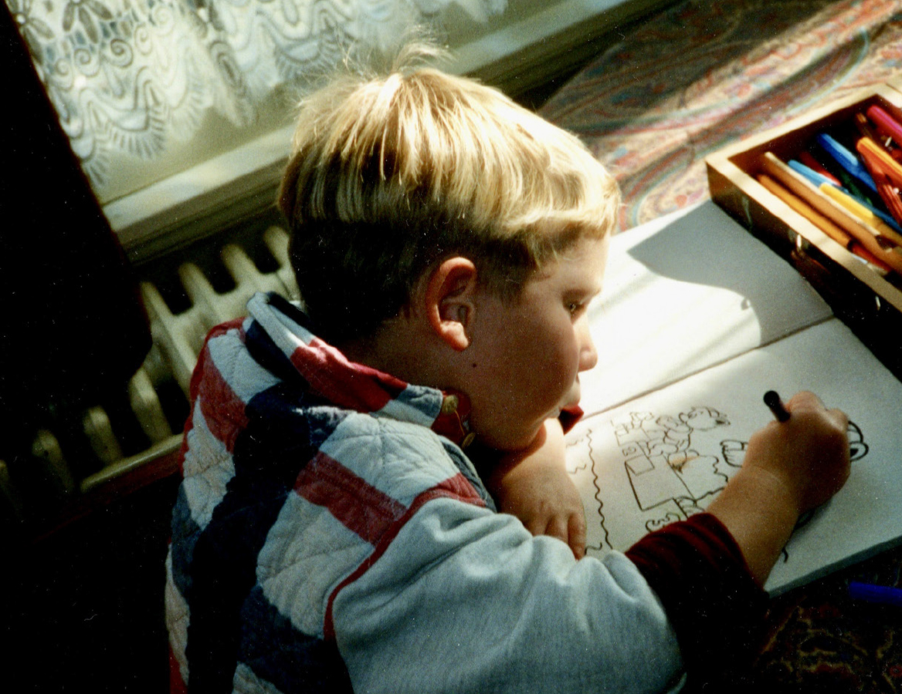
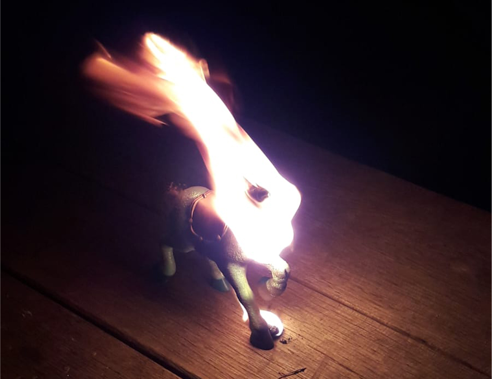
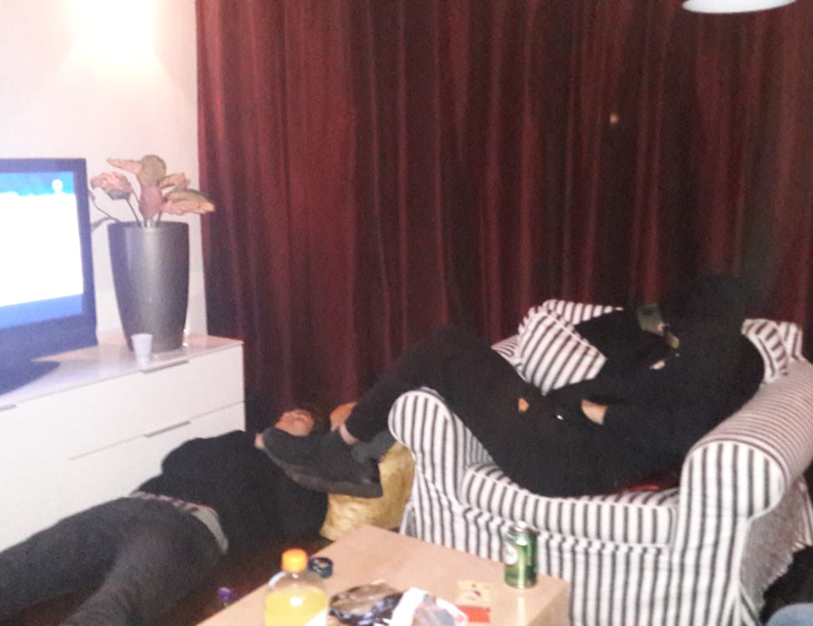
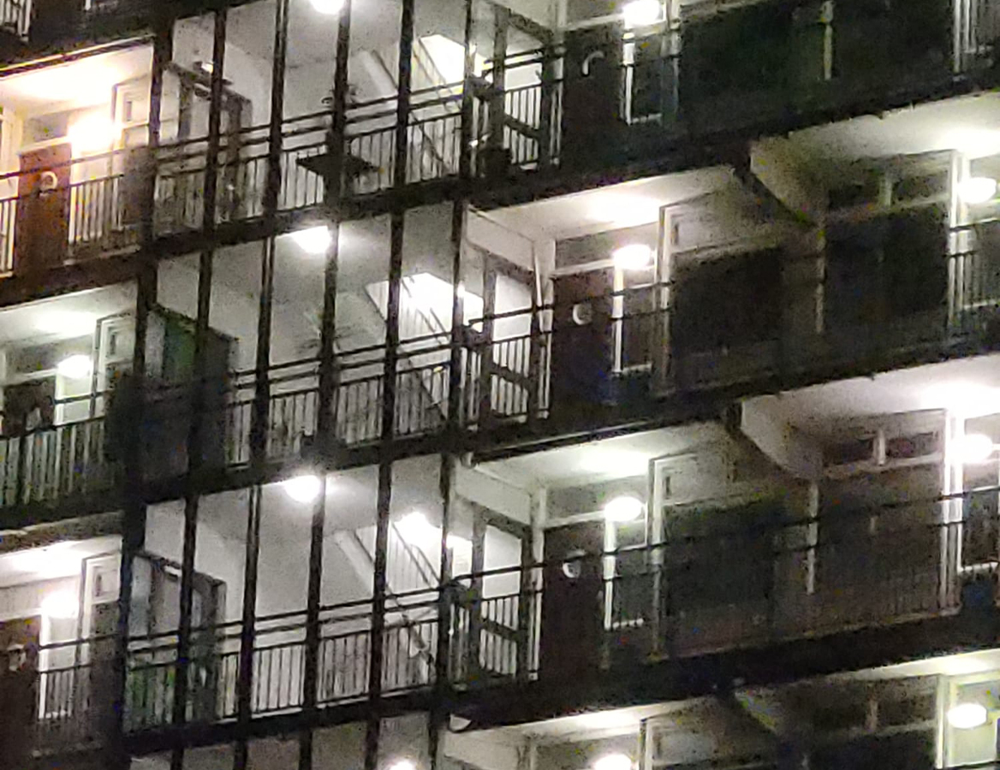
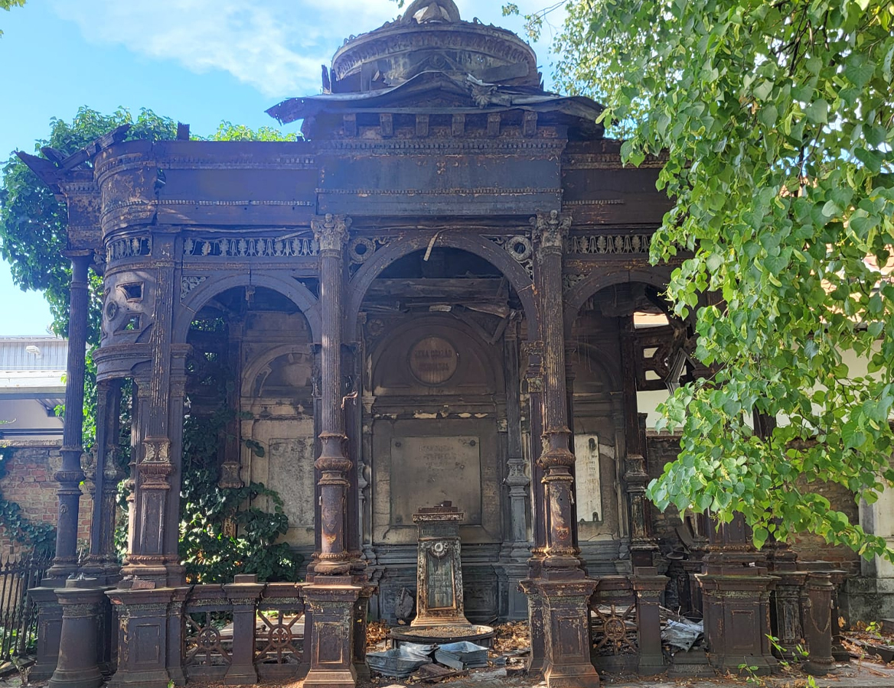
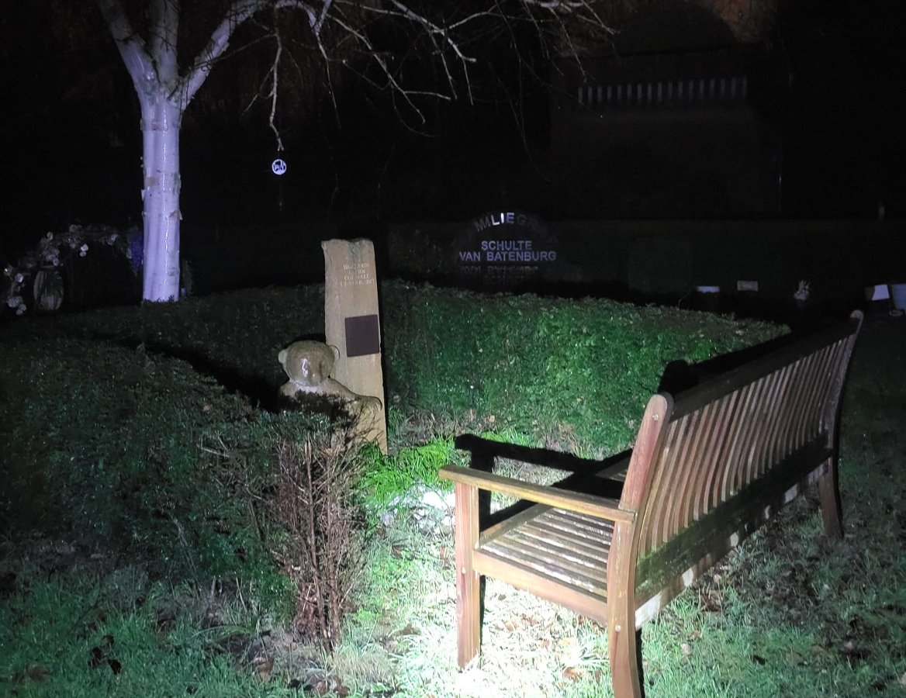